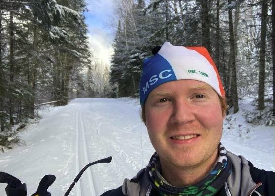

About
Hi! 👋 I'm Jack, a Minnesota based software consultant living on the north shore of Lake Superior.
Find me online
Get in touch

Hi! 👋 I'm Jack, a Minnesota based software consultant living on the north shore of Lake Superior.
